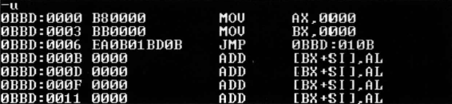
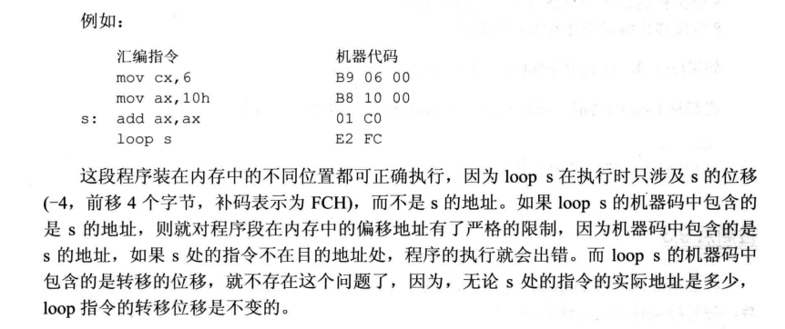

思绪飘远飞扬✴️
各种指令
offset 操作符
是由编译器处理的符号，功能是取得标号的偏移地址
例如：
1 | assume cs:codesg |
jmp指令
无条件转移指令，可以只修改 ip，也可以对 cs 和 ip 同时进行修改。
jump指令所需要给出的信息：
- 转移的目的地址
- 转移的距离(段间转移、段内短转移、段内近转移)
段内转移
**指令格式：**jmp short 标号
实现的是段内短转移，对 ip 修改的范围为 -128~127，即向前转移最多为128个字节，向后转移最多为127个字节。指令中的 “short” 符号说明该指令进行的是短转移。
在该指令所对应的机器码中，标号并不会被编译器直接翻译成标号所在的地址即目的地址，而是当转移之后的 ip 和当前 ip 的差值，也就是转移的位移，这个位移就是编译器依靠汇编指令中的标号所计算出来的。

因此 “jmp short 标号” 的功能对于计算机来说为：(IP)=(IP)+8位位移
- 8位位移=标号处地址—jmp指令后的第一个字节的地址(即当前 ip 地址)
- short 表明此处的位移为8位位移
- 8位位移的值在编译器编译时计算得出
功能相近的命令 “jmp near ptr 标号” ，实现近转移，该命令针对的是16位移，其他与 “jmp short 标号” 无差。
段间转移
**指令格式：**jmp far ptr 标号
实现段间转移，又称远转移。
例如：
1 | assume cs:codesg |
在 debug 中查看初始状态

jmp 指令中的机器码直接就包含了跳转的目标地址，和段内转移的情况不同，段内转移的 jmp 指令的机器码是转移位移。
转移地址位于寄存器或内存中
指令格式：
-
寄存器中：jmp 16位reg
-
内存中：
- jmp word ptr 内存单元地址 (段内转移)
- jmp dword ptr 内存单元地址(段间转移)
其中段内转移的内存单元地址大小为2个字节，改变的是 ip 的值
段间转移的内存单元地址大小为4个字节，同时改变了 cs 和 ip的值，其中 (cs)=(内存单元地址+2)，(ip)=(内存单元地址)。
例如：
1
2
3
4
5
6mov ax，0123h
mov ds:[0],ax
mov word ptr ds:[2],0
jmp dword ptr ds:[0]
此时(cs)=0，(ip)=0123h，cs:ip指向 0000:0123
jcxz指令
有条件的转移指令，所有有条件的转移指令都是短转移，在机器码中包含的是转移的位移，而不是目的地址。对于 ip 的修改范围都是：-128~127
指令格式： jcxz 标号(如果(cx)=0，转移至标号处执行)
从功能上看，“jcxz 标号” 就相当于
if ((cx)=0)
jmp short 标号;
loop指令
之前在学 bx 的时候就已经略有接触到了，循环指令，所有的循环转移都是段转移，机器码中包含的是转移的位移，而不是目的地址。对于 ip 的修改范围是：-128~127
指令格式： loop 标号(如果(cx)!=0，转移至标号处执行)
从功能上看，“loop 标号” 就相当于
if((cx)!=0)
jmp short 标号；
根据位移转移的意义
前面所提到的指令：
- jmp short 标号
- jmp near 标号
- jcxz 标号
- loop 标号
这些指令的机器码中并非包含目的地址，而是包含当前地址到目的地址的位移。也就是说 ip 地址的修改是根据转移目的地址和转移起始地址之间的位移来进行的。
使用位移转移的意义就在于：方便程序段在内存段中的浮动装配。通俗点来说就是，通过位移转移的方式，这些程序段能够随意被放置在内存的任何地方，但是指令所对应的机器码不需要进行修改。因为位移转移是相对的，它的值取决于起始地址和目标地址。当程序段在内存中的位置发生变化时，起始地址和目标地址都会发生变化，但是他们的差值是不变的。

本文作者：GhDemi
本文链接： https://ghdemi.github.io/2022/06/02/%E8%BD%AC%E7%A7%BB%E6%8C%87%E4%BB%A4/
文章默认使用 CC BY-NC-SA 4.0 协议进行许可，使用时请注意遵守协议。